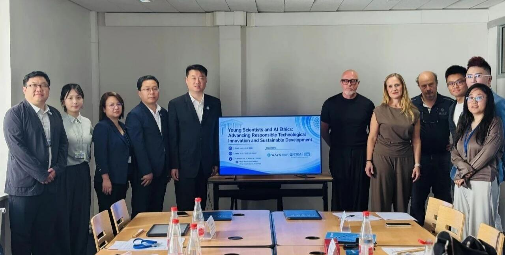
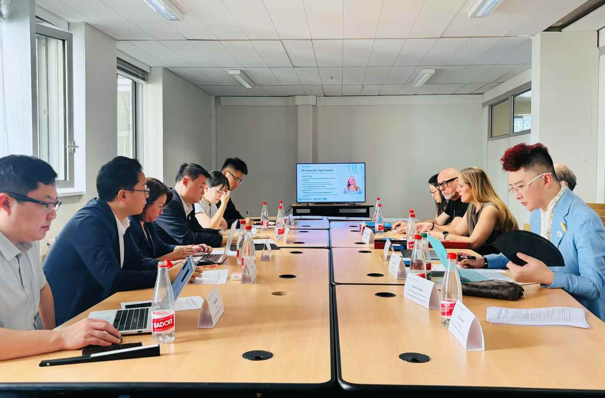
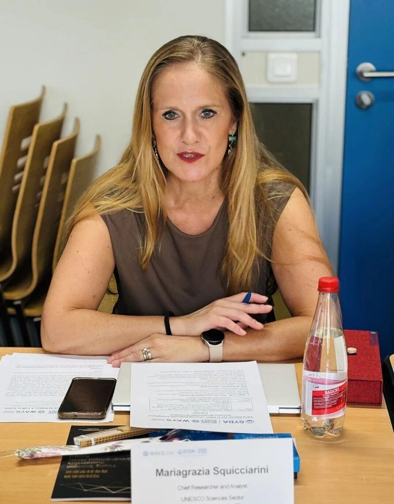
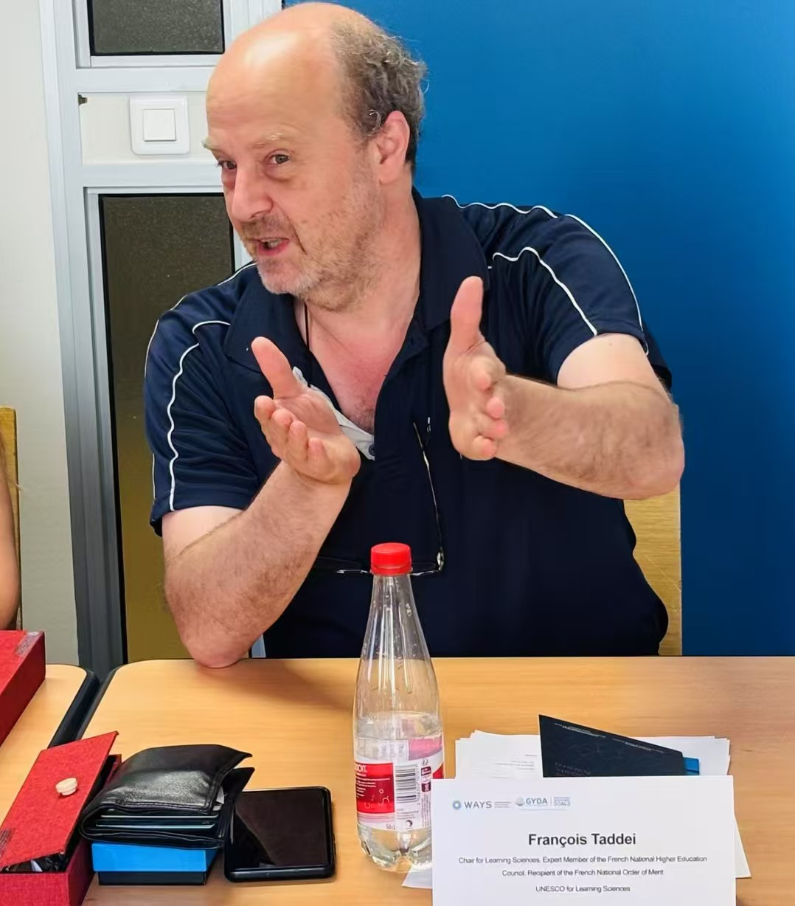
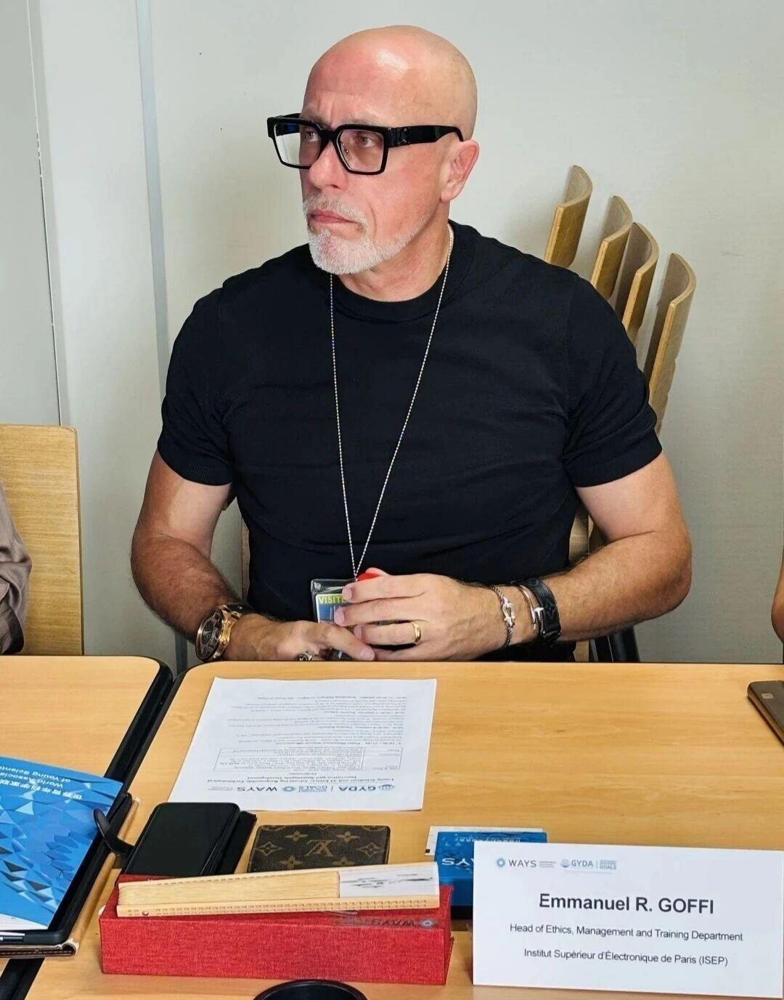
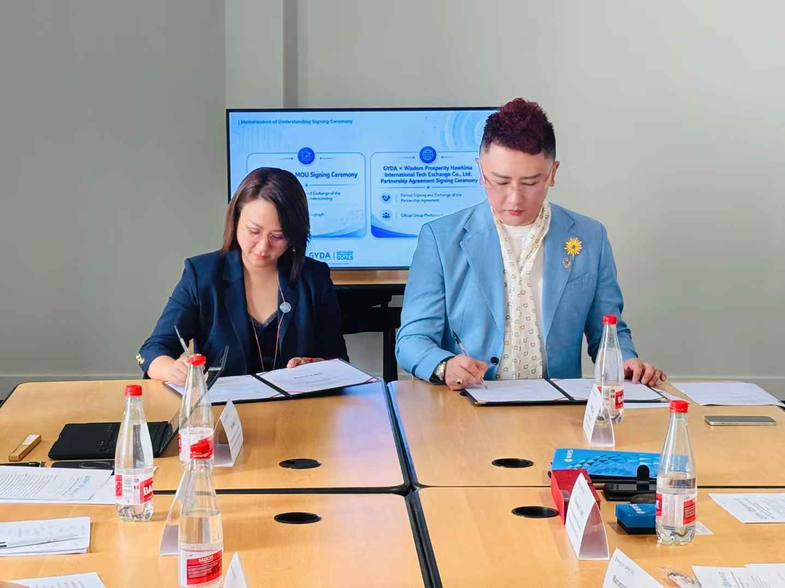
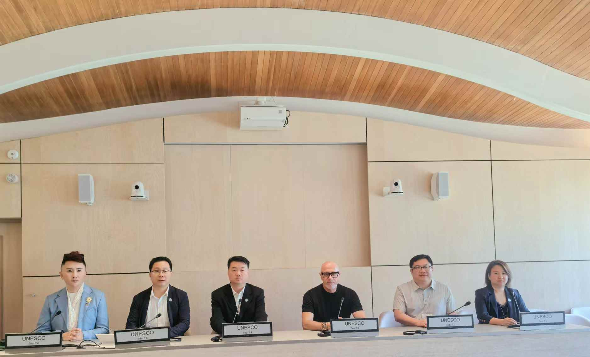

Young Scientists Champion Ethical AI Governance and Responsible Innovation at UNESCO Headquarters

Location
UNESCO Headquarters, Paris, France
Date
July 10, 2026
On 10 July 2026, the World Association of Young Scientists (WAYS) and the Global Youth Development Alliance (GYDA) convened a roundtable symposium titled "Young Scientists and AI Ethics: Advancing Responsible Technological Innovation and Sustainable Development" at the United Nations Educational, Scientific and Cultural Organization (UNESCO) Headquarters in Paris.
The event gathered experts, scholars, and youth representatives from international organizations to engage in deliberations on the leading role of youth within AI ethical frameworks and the alignment of responsible innovation with the Sustainable Development Goals (SDGs).

Reinforcing Multilateral Foundations: Collaboration Between United Nations (UN) Agencies and Global Scientific Networks
The convening of this symposium at the Headquarters of UNESCO underscores the cornerstone role of multilateralism and international cooperation in digital governance. The event brought together prominent scholars, institutional experts, and young scientific leaders from the UNESCO Sciences Sector, the UNESCO Chair in Learning Sciences, the French National Centre for Scientific Research (CNRS), the Institut Supérieur d'Électronique de Paris (ISEP), and the International Association of Universities (IAU).
Jia Wang, Deputy Secretary-General of WAYS, delivered welcoming remarks followed by a formal address. This address highlighted the role of young scientists as critical bridge-builders in transnational and cross-cultural scientific cooperation, emphasizing that within a multilateral framework, the younger researchers must transition from passive observers of technology policy to active partners in global agenda-setting and systemic reform.
Operationalizing Life-Cycle Governance: Global Implementation of the UNESCO Recommendation on the Ethics of AI
During the keynote presentation, Dr. Mariagrazia Squicciarini, Chief Researcher and Analyst at the UNESCO Sciences Sector, introduced the global implementation progress and practical milestones of the UNESCO Recommendation on the Ethics of Artificial Intelligence. Dr. Squicciarini pointed out that the meaningful inclusion of youth is a critical driving force for aligning technological ethics with inclusive social development. She advocated for a paradigm shift away from retroactive regulatory measures, proposing instead that rigorous ethical assessments and human-centric design must be deeply embedded across the entire life-cycle of AI research, development, and deployment to guarantee that technological advancements consistently align with collective human values.

Multidisciplinary Roundtable Dialogue: Co-Designing Responsible Innovation and the Sustainable Development Goals
The roundtable dialogue, themed "AI Ethics and Youth Empowerment," addressed the leadership of young scientists within global ethical structures, the operationalization of responsible innovation by technology enterprises to support the SDGs, and the development of transnational scientific networks.
Professor François Taddei, Co-Director of the UNESCO Chair for Learning Sciences, Expert Member of the French National Higher Education Council, and Recipient of the French National Order of Merit, alongside Professor Emmanuel R. Goffi, Head of the Ethics, Management and Training Department at the ISEP, presented key perspectives. The panel concluded that young researchers, as both developers of emerging technologies and future custodians of regulatory norms, must actively co-design and implement AI ethical frameworks rather than serving solely as executors.


Signing of WAYS-GYDA Strategic Agreement and Launch of the Global Call to Action
WAYS and GYDA formally signed a Memorandum of Understanding (MOU) during the symposium to establish structured, long-term cooperation. Under this bilateral framework, both organizations committed to cultivating young scientific talent, facilitating international research collaborations, and advancing global AI ethics governance.
Witnessed by the international delegation, the two organizations launched "Youth Scientists and AI Ethics: A Call to Action." The document outlines four core consensuses: (1) human-centered AI development governed by life-cycle ethical oversight; (2) young scientists as primary drivers of responsible innovation; (3) the integration of developing nations to resolve severe participation deficits in global agenda- and standard-setting; (4) the expansion of transdisciplinary, cross-sector, and cross-border cooperation in digital governance.

The Call to Action stresses that AI ethics acts not as a brake on innovation, but as its steering wheel. The global young scientific community stands ready to champion this technological transition responsibly—safeguarding human agency through ethical consciousness, bridging governance gaps through cross-sectoral collaboration, and ensuring that artificial intelligence remains a powerful force for good that drives sustainable global development.
